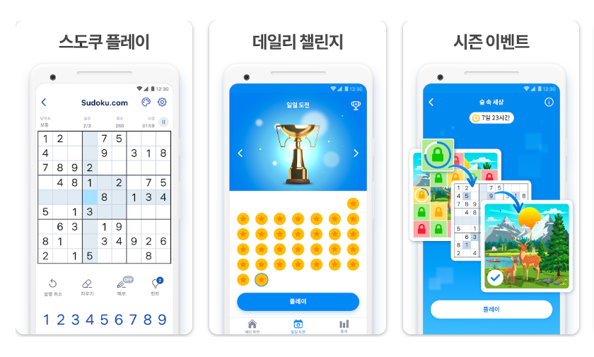

퍼즐의 사전적 정의는 '어려운 문제, 깊이 생각하게 만드는 문제'이며, 게임의 장르적 의미에서의 「퍼즐 게임」(영어: Puzzle Game, 일본어: パズルゲーム)은 어떠한 규칙 내에서 정해진 행위를 통해 주어진 조건을 완료해 클리어하는 단순한 게임을 지칭한다. 게임의 특성상 변수가 전혀 없거나 극히 드물다는 특성이 있다.
스도쿠는 9×9 칸에서 진행되는 숫자 퍼즐 게임이다. 일본의 게임으로 유명하고 역사에서 보듯 일본이 대중화를 시키기는 했지만 원조는 18세기 스위스의 수학자 레온하르트 오일러가 창안한 라틴방진(Latin Square)에 기초해 미국의 건축가 하워드 간즈(Howard Garns)가 넘버플레이스(Number Place)라는 이름으로 1979년에 소개한 게임이다. 이후 1984년 일본 니코리사의 잡지 <퍼즐통신 니코리>에서 스도쿠라는 이름을 붙여 수록하면서 대중화되었다. 명칭은 "数字は独身に限る"(숫자는 한 번씩만 쓸 수 있다)라는 문장을 줄여 제작했다.